01La scheda Testamento
Dopo aver installato Àncòra, in Electrum compare una nuova scheda: Testamento. In basso a destra trovi l'icona di Àncòra, la «à» con i due accenti.
Finché non hai fatto un testamento, il riquadro rosso te lo ricorda: «Finché non crei il testamento, nessuno riceverà i tuoi bitcoin.» Per iniziare clicca Crea il tuo testamento, oppure Crea / Modifica il tuo testamento in alto a sinistra.
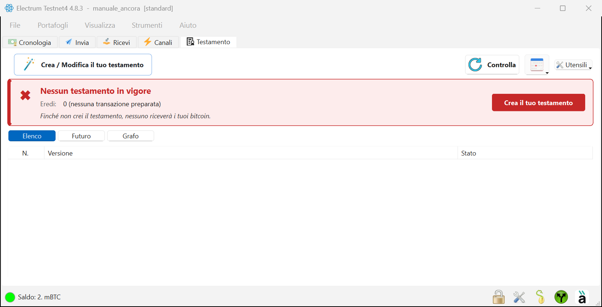
02Passo 1 — Quando
La procedura guidata ha quattro passi, indicati in alto: Quando, Eredi, Will-executor, Riepilogo. Il primo chiede la data di consegna: da quel giorno gli eredi potranno ricevere i bitcoin, se nel frattempo non avrai rinnovato il testamento.
- Scegli Tra 1 anno, Tra 2 anni o Tra 5 anni, oppure Scegli la data… per un giorno preciso.
- Sotto vedi la data due volte: nel tuo fuso orario e come viene scritta nel testamento (in UTC, l'ora usata da Bitcoin).
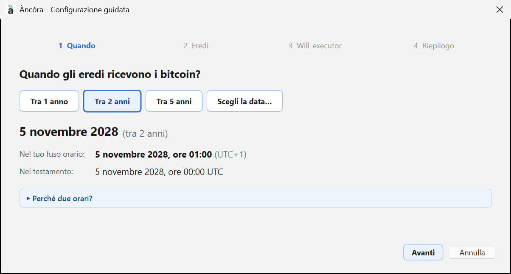
Quando hai scelto, clicca Avanti.
03Passo 2 — Gli eredi
La lista è vuota
Qui scegli chi riceve i bitcoin. All'inizio la lista è vuota e il plugin ti ricorda, in rosso, di aggiungere almeno un erede. Clicca + Aggiungi erede.
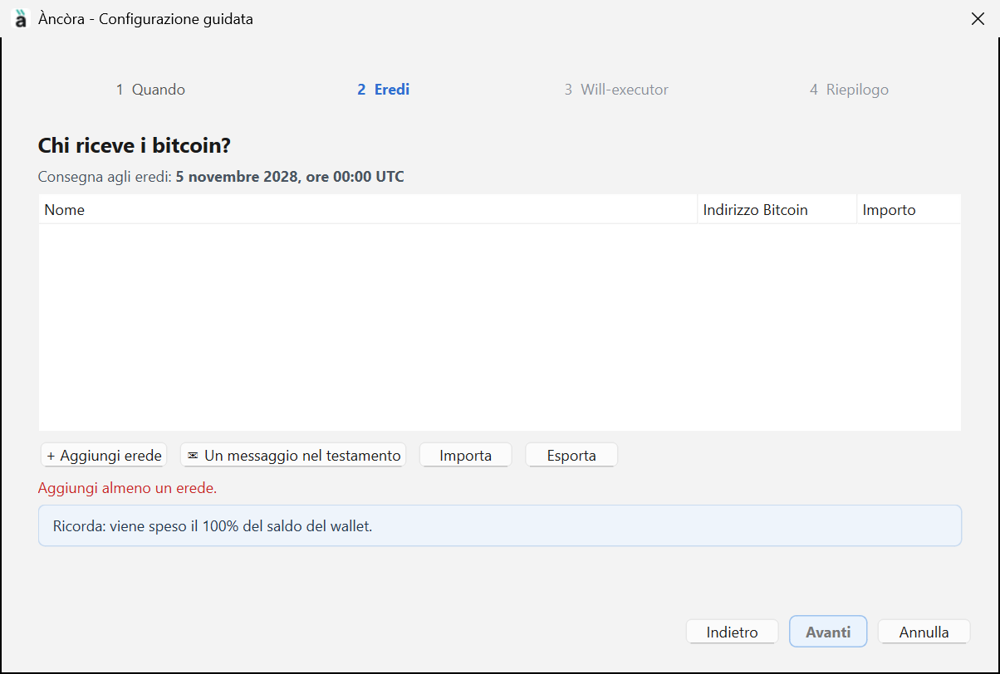
Aggiungi un erede
Si apre la finestra Nuovo erede:
- Nome: come vuoi chiamarlo, per esempio «Erede 1».
- Indirizzo Bitcoin: un indirizzo del portafoglio dell'erede, quello che lui trova in Ricevi. Puoi anche leggerlo da un codice QR con l'icona della fotocamera.
- Importo: una percentuale del saldo, oppure un importo fisso.
- Note: un promemoria solo per te, per esempio «Figlio».
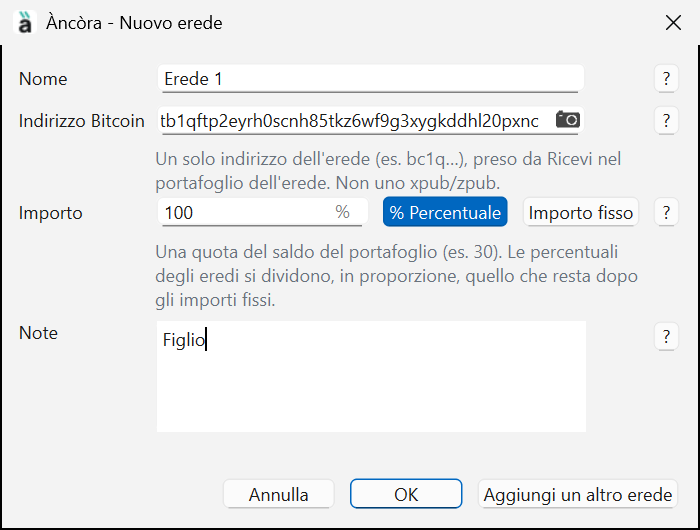
Clicca OK, oppure Aggiungi un altro erede se ne vuoi più di uno. Ogni ? a destra apre una breve spiegazione.
Se l'indirizzo è del tuo stesso portafoglio
Àncòra controlla l'indirizzo. Se appartiene al tuo stesso portafoglio, ti avvisa: alla consegna i bitcoin resterebbero a te invece di andare all'erede. Di solito è un errore di copia: rispondi No e incolla l'indirizzo giusto.
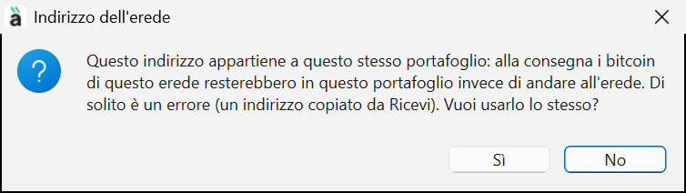
La lista con l'erede
L'erede compare nella lista con nome, indirizzo e quota. Sotto, Àncòra somma le quote: qui il 100% del saldo. Con Un messaggio nel testamento puoi lasciare due righe agli eredi; con Importa ed Esporta puoi salvare o riprendere la lista. Poi clicca Avanti.
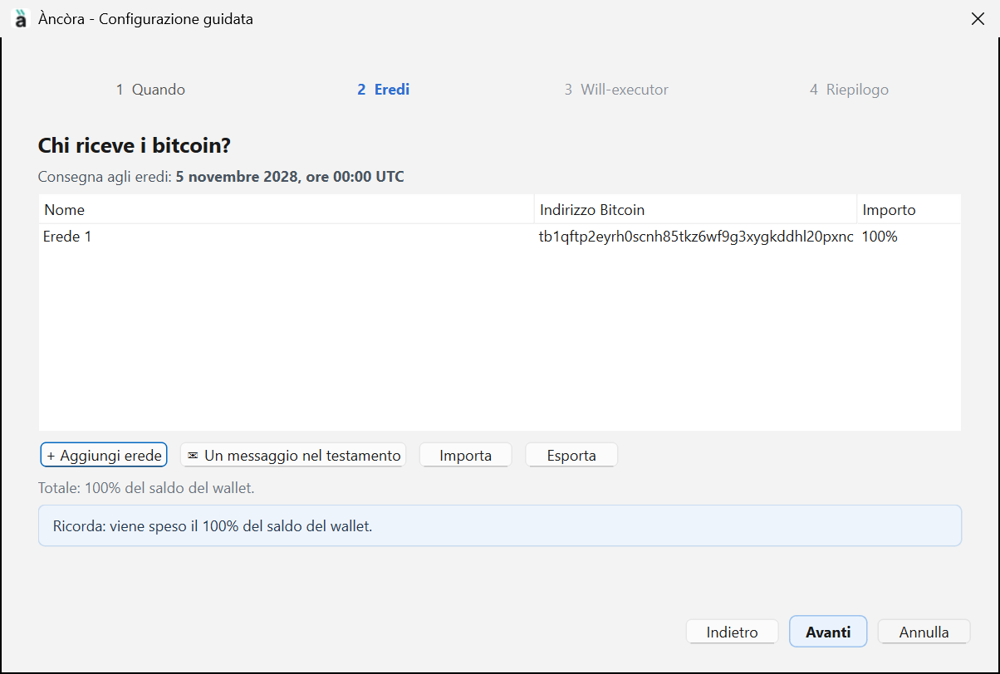
04Passo 3 — I will-executor
I will-executor sono servizi indipendenti che conservano una copia del testamento firmato e la inviano alla rete alla data di consegna. Non hanno le tue chiavi: possono solo aspettare.
- Àncòra scarica da solo l'elenco e controlla chi risponde: la riga verde dice quanti rispondono e quanti ne hai scelti.
- Il segno di spunta a sinistra indica i will-executor scelti; il pallino verde nella colonna S indica che rispondono.
- Commissione base è la piccola mancia per il will-executor: la paga solo quello che invia il testamento il giorno della consegna.
- Con Scarica l'elenco e Ping a tutti aggiorni la lista; Come funzionano i will-executor apre la spiegazione animata.
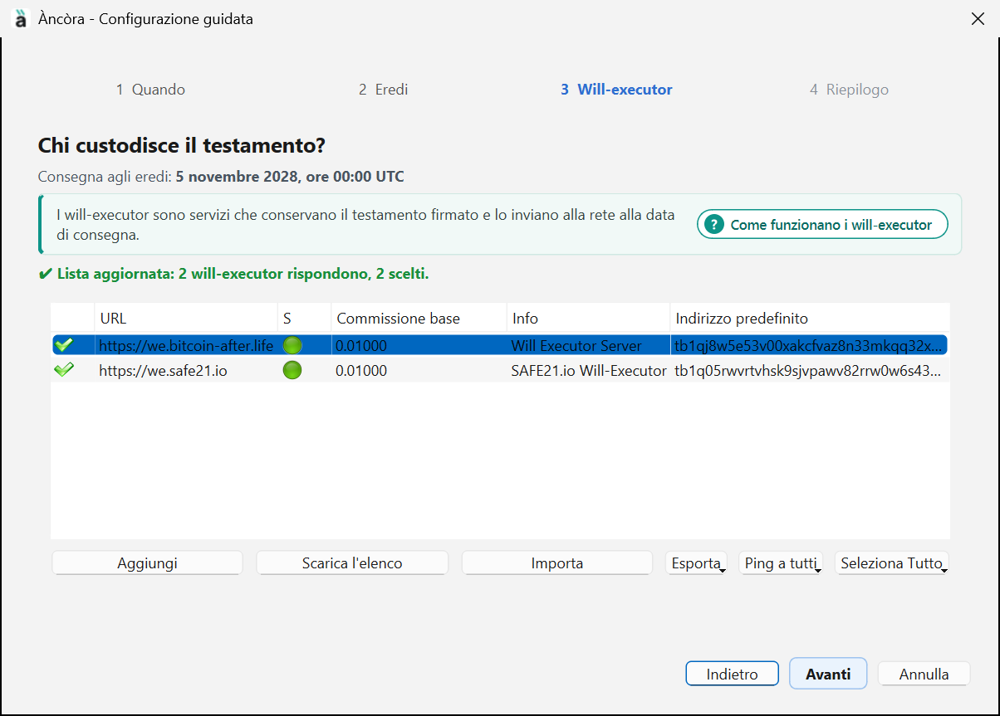
05Passo 4 — Riepilogo
L'ultimo passo riassume tutto: la data di consegna (in UTC e nel tuo fuso orario), gli eredi, quanti will-executor hai scelto e la loro commissione. Se qualcosa non va, torna indietro con Indietro. Se è tutto giusto, clicca Crea il testamento.
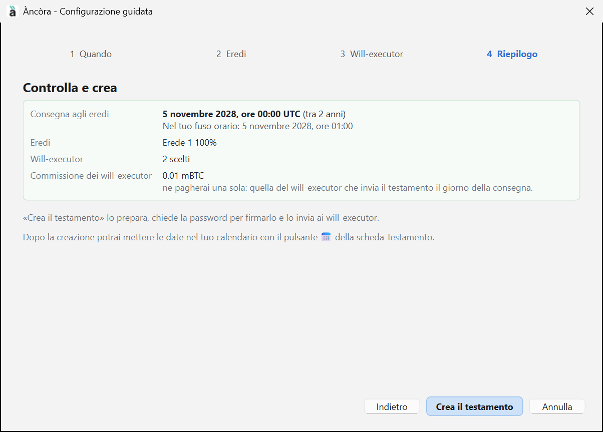
06Firma e invio
Controlla prima di firmare
Prima della firma Àncòra mostra cosa c'è davvero nel testamento: gli indirizzi degli eredi e dei will-executor, gli importi e la commissione per i miner.
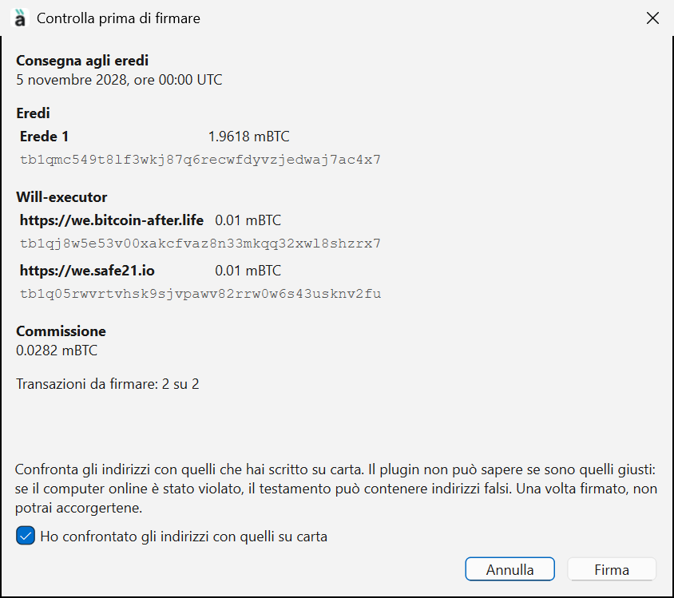
Preparazione del testamento
Dopo la firma Àncòra fa tutto da solo e lo mostra in cinque caselle: Controllo, Preparazione, Firma, Invio, Verifica. Quando sono tutte verdi, ogni will-executor ha ricevuto il testamento e ha confermato di averlo.
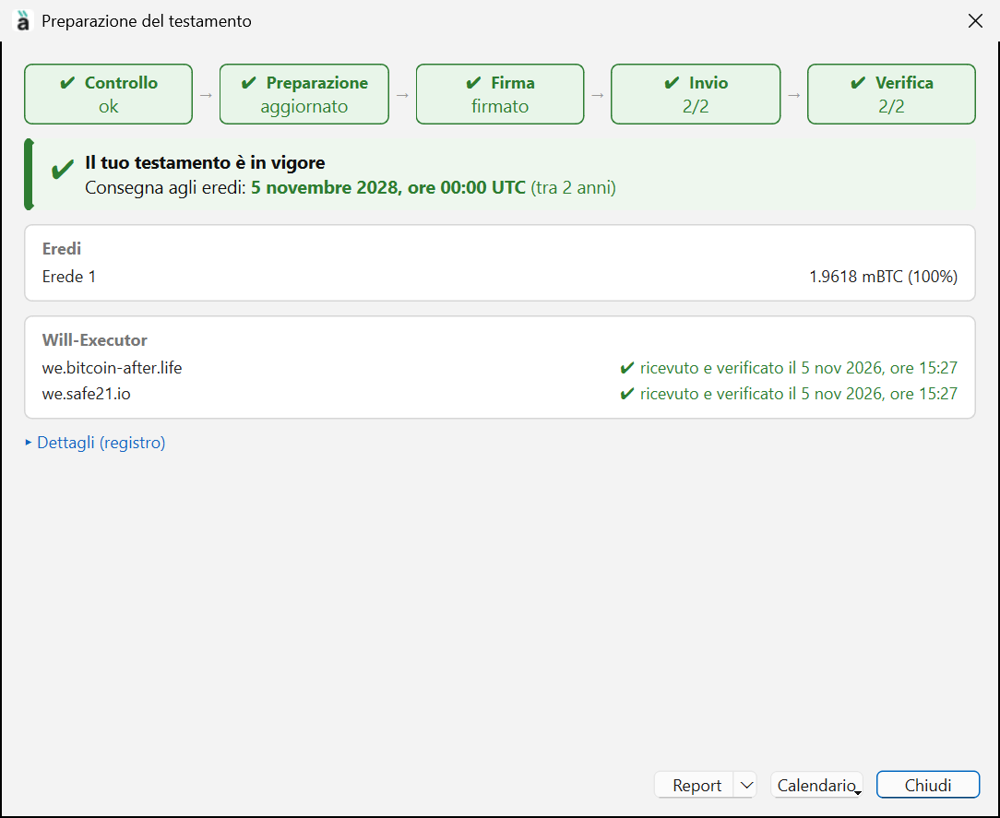
Da qui puoi aprire il Report in PDF da stampare e mettere le date nel Calendario. Poi clicca Chiudi.
07Il testamento è in vigore
Nella scheda Testamento il riquadro ora è verde: «Il tuo testamento è in vigore». Vedi la data di consegna, quanti will-executor l'hanno ricevuto e verificato, e quando è stata fatta l'ultima verifica. Sotto, nell'Elenco, c'è la versione del testamento con lo stato In vigore.
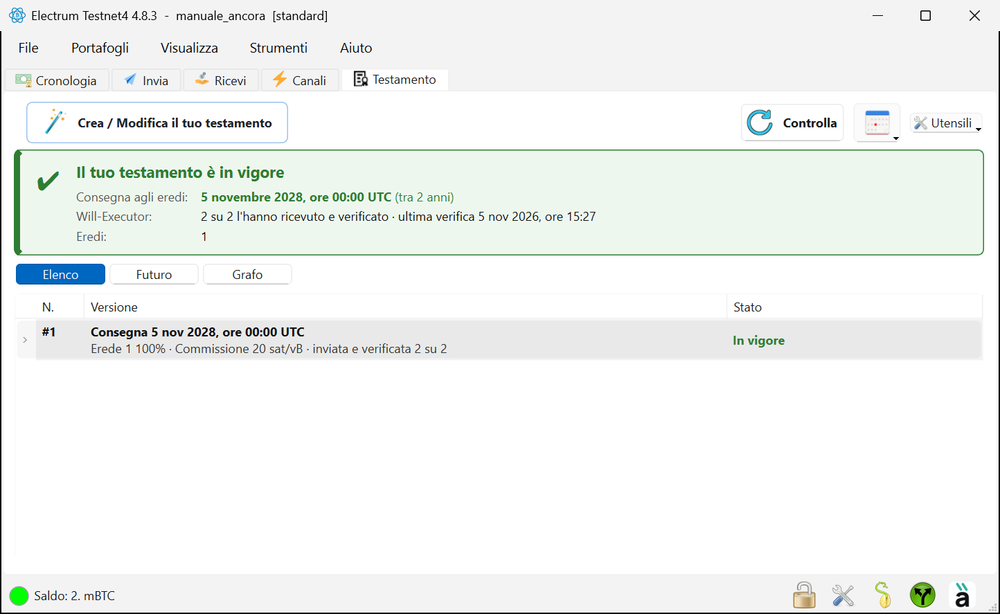
08La vista Futuro
Clicca Futuro per vedere il testamento su una linea del tempo: a sinistra Oggi, a destra la consegna agli eredi, e in mezzo il tempo che manca (qui «tra 2 anni»).
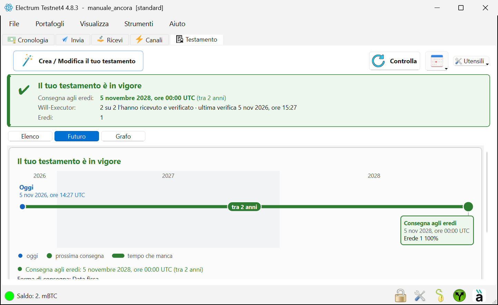
Scorrendo in basso trovi i will-executor che hanno la copia e la frase che riassume tutto: «Se il testamento non viene più controllato né rinnovato, il 5 novembre 2028 i bitcoin andranno a: Erede 1 100%.»
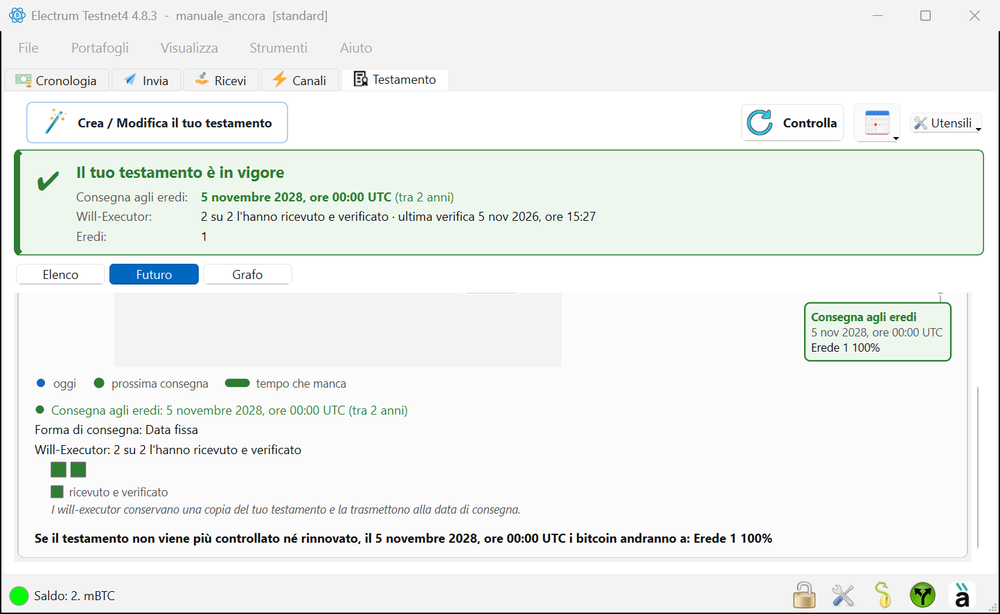
Immagini dal vero Electrum 4.8.3 su Windows con Àncòra 0.8.0, prese sulla rete di prova (testnet4) con un portafoglio di prova: per questo nel titolo delle finestre si legge «Testnet4». Sulla rete vera le finestre sono uguali.